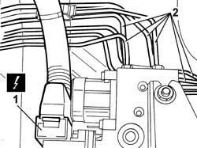
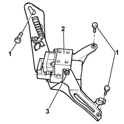

3340A12 ABS HYDRAULIC AND ELECTRONIC CONTROL UNIT
- Path
- Procedures > 33 BRAKING SYSTEM > 3340 ANTI-LOCK BRAKE SYSTEM (ABS) > 3340A ABS CHECK/ADJUSTMENT DEVICES > 3340A12 ABS HYDRAULIC AND ELECTRONIC CONTROL UNIT
- Kind
- repair procedure (removal / refitting; the operation number is the code)
- Applies to
- all engines; all production periods
- Interactive page
- https://sloeber94.github.io/elrnDB-fDct/en/#/244001130
Applies to: all engines; all production periods
 Removing
Removing
 Refitting
Refitting- Position the vehicle on the lift.
- Disconnect the negative battery terminal.
Op. 7055B54 UNDER-ENGINE GUARD - R R
- Remove the protective cap from the bleed valve on the rear brake caliper.
- Connect the recovery device (pipe and reservoir) to the rear brake caliper bleed valve.
- Operate the brake pedal until the brake/clutch reservoir is drained.
1. Disconnect the electrical connection for the ABS control unit.
 | Description | Connector |
|---|---|---|
1 | ABS control unit | M050 |
2. Undo the brake pipe connectors at the hydraulic control unit.

Applies to: all engines; all production periods
- Release the springs fastening the brake pipes.
1. Undo the bolts fixing the ABS control unit bracket to the bodyshell.
2. Remove the support assembly complete with ABS control unit.
3. At the bench, undo the nuts and remove the actual control unit from the ABS control unit bracket.

Applies to: all engines; all production periods
Refitting
Removing- Fit the hydraulic and electronic control unit for the ABS on the mounting bracket and tighten the nuts to torque.
- Fit the hydraulic control unit complete with bracket in the special housing and tighten the bolts fixing it to the bodyshell to torque.
 | Value - daNm | Fastening | Component | Ø |
|---|---|---|---|---|
. | 1.9 - 3.0 | Bolt | HYDRAULIC/ELECTRONIC CONTROL UNIT SUPPORT (ABS) | M8 |
- Attach the spring to the control unit.
- Tighten the brake pipe connectors at the ABS hydraulic control unit.
| Value - daNm | Fastening | Component | Ø |
|---|---|---|---|---|
. | 1.2 - 2.2 | Nut | SYSTEM HYDRAULIC AND ELECTRONIC CONTROL UNIT | M10 |
| Value - daNm | Fastening | Component | Ø |
|---|---|---|---|---|
. | 1.2 - 2.2 | Nut | SYSTEM HYDRAULIC AND ELECTRONIC CONTROL UNIT | M12 |
- Connect the electrical connection for the ABS control unit.
| Description | Connector |
|---|---|---|
. | ABS control unit | M050 |
Op. 7055B54 UNDER-ENGINE GUARD - R R
- Fit the protective cap for the bleed valve on one of the front brake calipers.
Op. 0010T65 HYDRAULIC BRAKE SYSTEM BLEED AIR
Op. 7055B54 UNDER-ENGINE GUARD - R R
- Lower the lift.
- Connect the negative battery terminal.
- Remove the vehicle from the lift.
- Test the operation of the braking system.